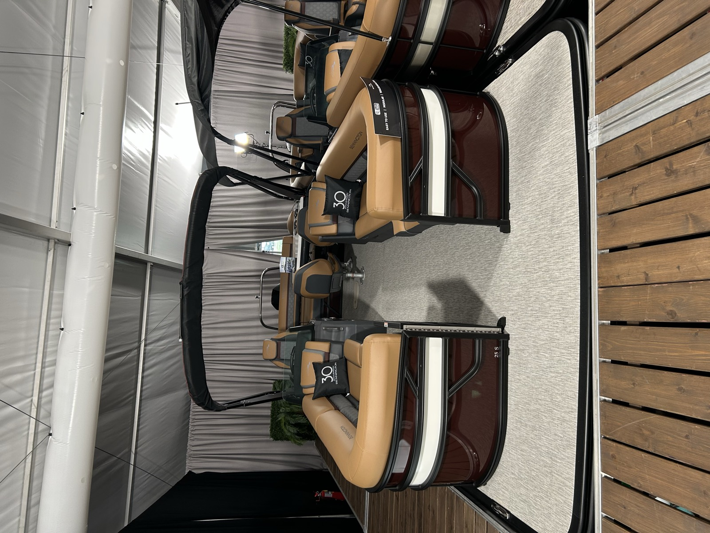

INFO
Boat Specefications
- MSRP: $156,441
- LOA: 25'-11.5"
- Beam: 8'6"
- Engine: Mercury 250XL
- Floorplan: Swingback
- Exterior Main Color: Sunset Red
- Exterior Accent Color: White
- Rail Color: Black
- Interior Main Color: Modesto Brown
- Interior Accent Color: Sunset Red
- Interior Furniture Style/Trim: Luxe
What's New for 2027
2027 updates
- PowerShade Sport Bimini: PowerShade Sport Bimini features convenient push-button deployment and exclusive Bennington-designed profiles for a clean integrated look. Combining premium styling with effortless shade protection, it delivers enhanced comfort, convenience and luxury for every day on the water.
- Stage 3 Audio Package: Stage 3 Audio Package features a premium Rockford Fosgate sound system with a PMX-6BB source unit, PMX-R20B aft remote, six 6.5" M1 RGB-capable speakers, and a 10" PMPS-10 subwoofer/amplifier combination. The result is rich, immersive sound and customizable lighting that bring a luxury entertainment experience to every day on the water.
- Comfort Step Ladder: Features wide, stair-style steps that provide easier, more comfortable boarding from the water. The ergonomic design improves stability and confidence for swimmers of all ages, creating a safer and more enjoyable on-water experience.
- New Ski Tow Bar: Ready for your next watersports adventure, Bennington's new reinforced ski tow bar is built to meet the latest industry towing standards for increased strength and durability. The upgrade design delivers added confidence when towing skiers and riders, while seamlessly integrating with the boat's premium fit and finish. More capibility, more confidence, and more fun for everyone on board.
Why This Boat
Key Selling Points
- A full 25-foot deck with 250HP Mercury power delivers spacious, capable cruising for big groups.
- Push-button Power Shade Sport Bimini brings effortless, integrated shade at the touch of a button.
- Luxe trim elevates the interior with premium materials and comfort.
- New reinforced Ski Tow Bar makes it watersports-ready right from the factory.
- Comfort Step ladder and Stage 3 Rockford Fosgate audio round out an entertainment-ready package.